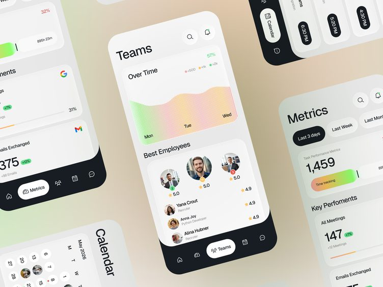

Team Performance Tracking App
by Nixtio
SaaS · dashboardSaaS · Dashboard
团队绩效追踪 App：目标进度、任务完成率与成员表现收在一块深色仪表盘里，环形进度与排行榜一眼分出高低；管理工具用“一块仪表盘 + 一张排行榜”把团队状态讲得清清楚楚。A team performance tracking app: goals, task completion and member stats share one dark dashboard, where ring charts and a leaderboard make highs and lows obvious at a glance; one dashboard and one leaderboard lay out the whole team's status.